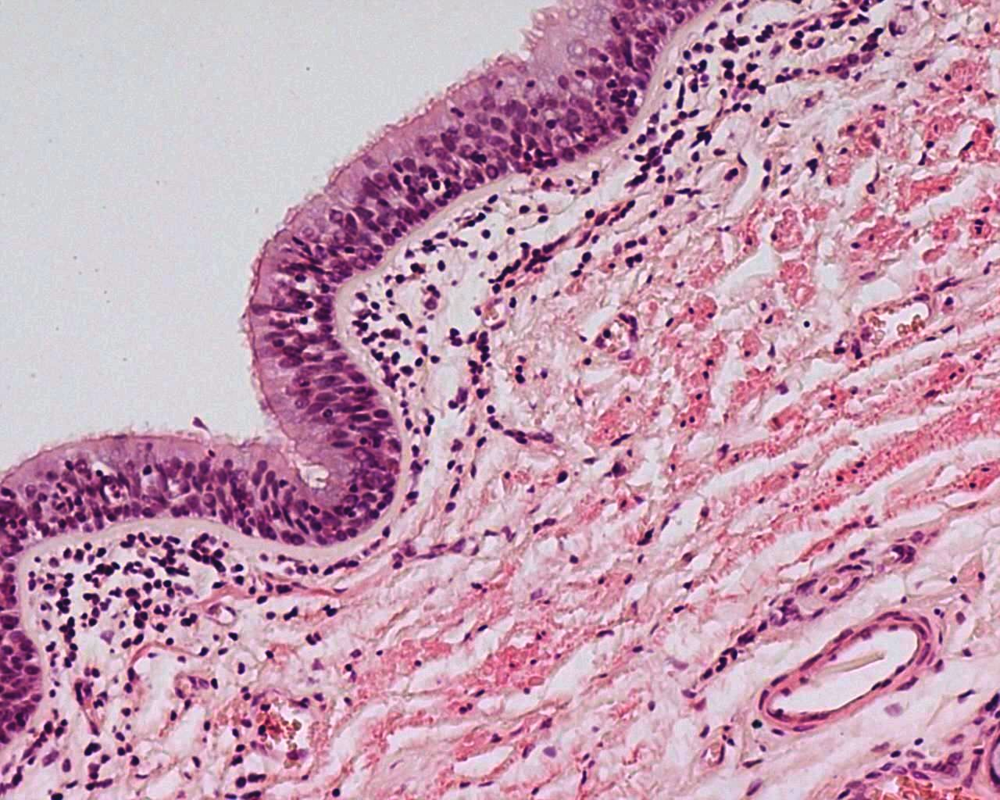

| Pulmonary Pathology,
comparison |
|
|  |
 |
| The normal bronchus is on the left. Notice that in comparison, the biopsy from a patient with asthma shows the epithelial layer is taller and has a variable height. The basement membrane in the asthmatic is thicker. In the normal specimen, there are a some leukocytes in the submucosa, but no large dense focal collections as in the asthmatic. | |
|
| |